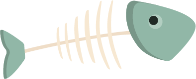
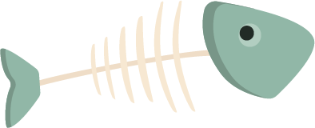

The dataset used on this website comes from the FAO - Technical Platform on the Measurement and Reduction of Food Loss and Waste, the leading international resource on food loss along the supply chain.
Data origin
FAO compiles data from over 700 scientific publications, institutional reports, national studies, and global databases (World Bank, IFPRI, FAOSTAT…).The latest version includes more than 29,000 data points, continuously updated as part of a “living” database.
How the data are collected
FAO uses two methods:
- Manual review and extraction from scientific and institutional sources;
- Automated collection through the FAO Data Lab (web scraping, language detection and automatic extraction of products, places, supply chain stages and values).
Each record includes the methodology used to produce it.
What the data includes
The original dataset contains:
- m49 code, country, region, cpc code, commodity, year, loss percentage, loss quantity (the data appears in 1/7 of the rows, mostly without units of measurement), activity, supply chain stage, treatment, cause of loss, sample size, method data collection, reference, url and notes.
- Losses may be expressed as a percentage, by weight, or in economic value. FAO harmonizes units when possible and uses the data to calculate global indicators such as the Food Loss Index (SDG 12.3.1.a).
A rich but incomplete dataset
Some countries, products and supply chain stages have limited or uneven data, and causes of loss are often missing. These gaps reflect the complexity of monitoring global food losses, not a lack of effort from FAO, which has carried out extensive and valuable work aggregating highly diverse sources.
How we processed the dataset
To make the dataset clear and consistent for visual exploration, we:
- chose to use the data in the country, commodity, year, loss percentage, food supply stage and cause of loss columns
- standardized country names;
- grouped food items into 16 broader categories;
- grouped causes of loss into 14 categories;
- calculated the average percentage of waste by commodity, country, and year;
- identified the supply chain stage with the highest waste per commodity, noting the primary cause of loss where possible;
The final dataset is cleaner, more readable and optimized for interactive visualization.
 
